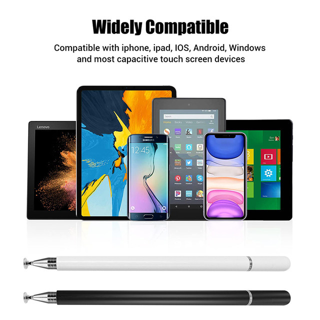
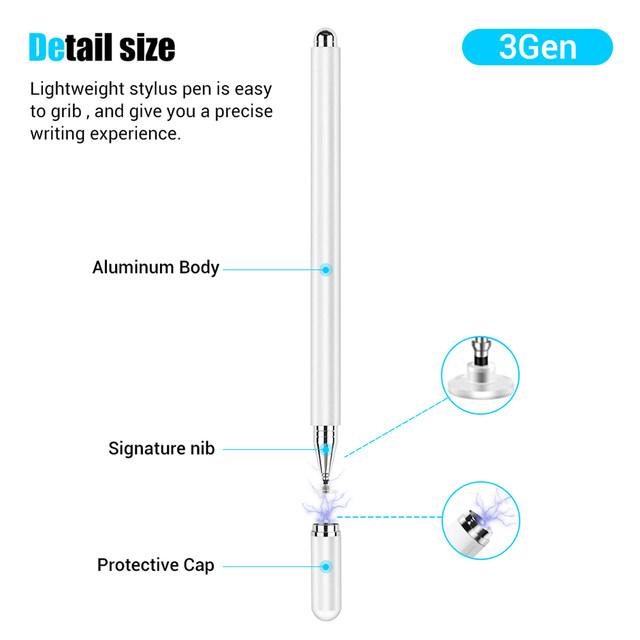
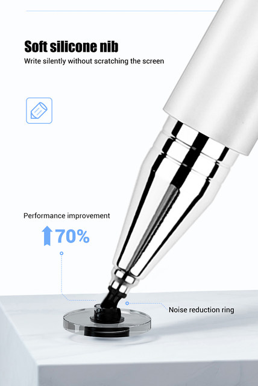
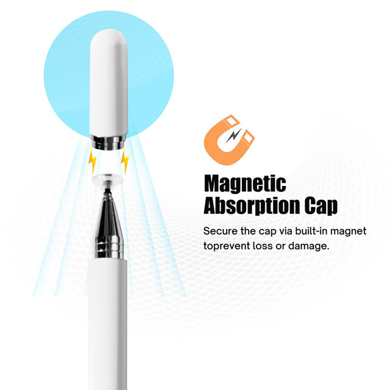
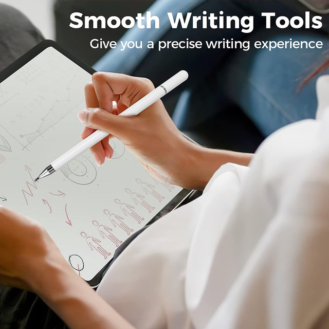
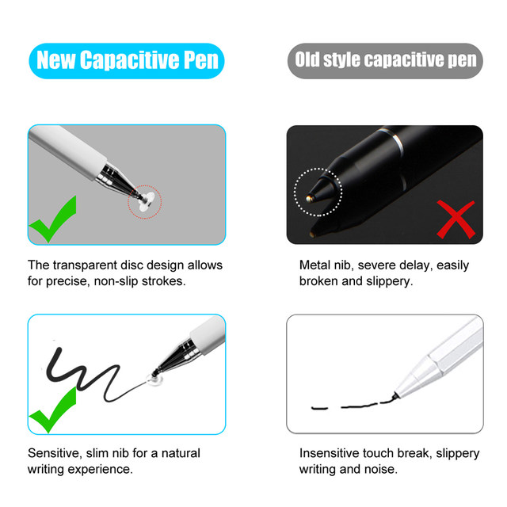
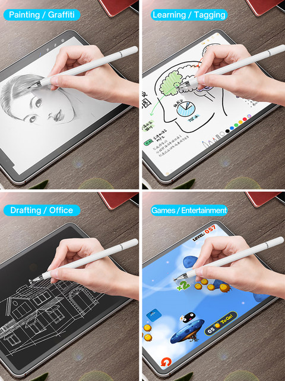
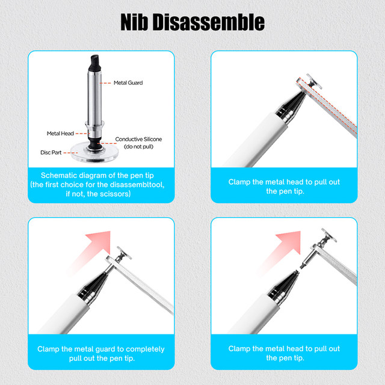
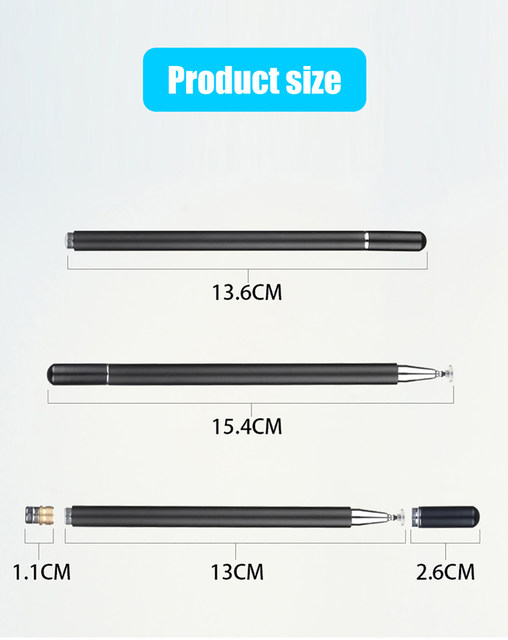
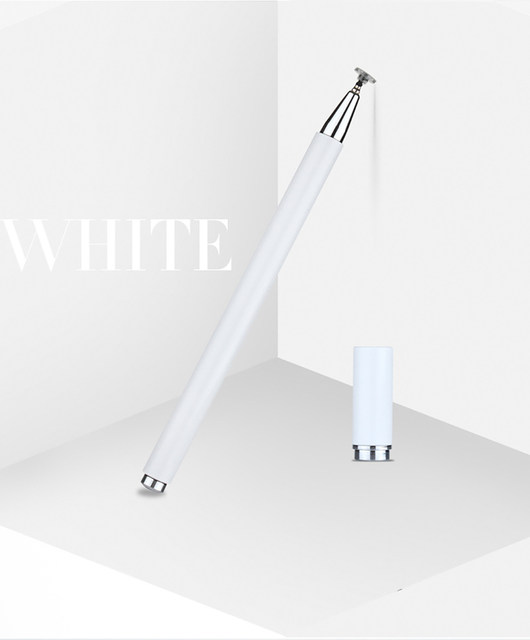

• 2 in 1 Functionality :This stylus pen is a 2 in 1 device, combining the functionality of a pencil and a touchscreen stylus, making it a versatile tool for your smartphone, tablet, or iPad mini.
• Universal Compatibility :Designed for universal compatibility, this stylus pen works with Android mobile screens and iPads, including iPad mini 1, 2, 3, making it a reliable choice for a wide range of devices.
• Capacitive Technology :The stylus pen uses capacitive technology, ensuring accurate and smooth drawing and writing experience on your device's screen.
• USB Converter Type :As a USB converter type, this stylus pen allows for easy and convenient charging, ensuring you always have power when you need it.
• Chinese Origin :Originating from Mainland China, this stylus pen is a testament to the country's quality craftsmanship and innovation in technology.
STYLUS PENS FEATURES:
aluminum cylinder pen body, theposition of the disc tip is connected by metal steel balls toimprove life and double durability. Both ends arereplaceable, providing a smooth pen-writing experience foryour touchscreen tablets and smartphones
STYLUS PENS Design:
bid farewell to the traditional designtwo-way magnetic cap, do not need to twist or push thehat back, just put the hat close to the pen, (both sides) willautomaticallV absorb.
COMPATIBLE PRODUCTS:
Apple iPad,iPad Mini,iPhoneAndroid Tablet,Android Phone, Samsung Galaxy,Microsoft, and other capacitive touch screen devices.
CONVENIENCE:
Special hidden disc tips design.Thereplacement disc tips is hide inside the pen cap. It canmake sure you can use the pen for emergency situationwhen the disc broken or lost.No need to carry the wholeoox out. This stylus also has a leather cover, make sure youcan carry the pen out on any situation
Specification
Material:Plastic + Metal
Process:Baking paint
Function:suitable for all kinds of mobilephones,iPad and tablet surface touch screen










Notice
*Images on this page are for illustration only and the design of the actual product may differ.
*All data on this page are from laboratories, actual results may vary according to differences in software version, environment and phone edition.
*Channel availability may vary between markets. Local standards and laws may vary, please ensure this product meets local requirements before purchasing.